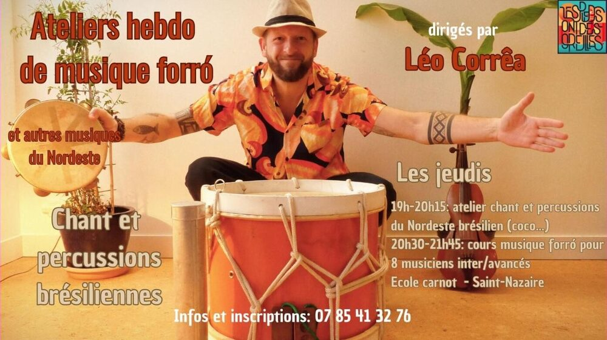

Ateliers hebdomadaires de musique brésilienne (forró, coco…)

Lieu : École Carnot, 24 rue Fernand Gasnier, Saint-Nazaire
Jeudi, cours de musique adultes avec Léo Corrêa : 19h-20h15 atelier chant et percussions du Nordeste brésilien ; 20h30-21h45 cours de musique forró.